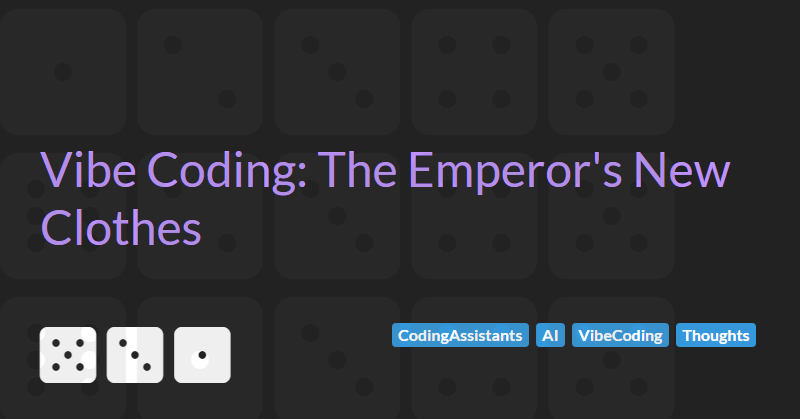

Vibe Coding: The Emperor's New Clothes
Every generation of software development seems to discover a new silver bullet. A tool, platform, or magical abstraction that will finally eliminate the hard work of building quality software systems. Today’s iteration of that ancient dream is vibe coding.
Vibe coding refers to the new wave of tools that promise you can "build software by feel" by using natural language prompts rather than traditional, structured coding. These tools, powered by AI, claim to encourage a faster, more intuitive approach to building applications. The goal is simple: make programming so easy and abstract that anyone can do it without deep technical expertise.
The promises are intoxicating: build faster, ship faster, learn less, deliver more. Everyone can code! Developers are liberated! Business users become engineers!
If this sounds familiar, it should. We’ve heard it all before.
Before we dive in, it’s important to frame this article properly: I write this not as a cynic, but as a software craftsperson with over 30 years of experience building, maintaining, and rescuing real-world systems. I’ve seen several waves of transformational promises and observed how easily optimism can blind us to enduring software realities.
The purpose of this critique is not to dismiss innovation, but to offer a reasoned perspective: why vibe coding is unlikely to replace the careful, disciplined practices that professional software engineering demands.
A Familiar Pattern: 4GLs and the Cycle of Hype
In the 1980s and 1990s, the industry was enthralled by Fourth Generation Languages (4GLs). Tools like PowerBuilder, Oracle Forms, and Visual Basic promised to abstract away the complexity of software development. "You don’t need software engineers," they said. "Just someone who can drag and drop."
And to some extent, they delivered at first. For simple CRUD applications and small departmental tools, 4GLs accelerated development dramatically. But as applications grew, so did the problems:
- Lack of good engineering discipline led to spaghetti code that mixed business logic with UI concerns that made systems hard to maintain and impossible to unit test.
- Poor structure led to debugging and optimisation nightmares.
- Scaling beyond the initial vision often meant a complete rewrite.
Eventually, organisations rediscovered why software engineering disciplines such as design patterns, testing, version control, and maintainability existed in the first place. 4GLs never replaced engineering; they simply shifted the work from initial development to expensive maintenance and rework down the road.
The False Dawn of Model-Driven Architecture
Not long after the 4GL wave ebbed, another movement promised to eliminate complexity: Model-driven architecture (MDA). Pioneered in the early 2000s, MDA envisioned a future where software would be designed using high-level models (typically UML diagrams) from which code could be automatically generated. Developers wouldn’t need to worry about the gritty details of implementation. Models would be the system.
The industry loved the idea. Tools vendors, standards bodies, and consultants rushed to embrace MDA as the new frontier. Popular platforms like IBM Rational Rose, AndroMDA, Sparx Systems Enterprise Architect, and OptimalJ were positioned as essential to this model-driven future. You could design your application architecture, database schemas, and even user interfaces in modelling tools and then "press a button" to generate large portions of the codebase.
Yet once again, the reality fell short of the dream:
- The generated code was often bloated, inefficient, and hard to understand.
- Making even small changes required either tweaking the model (which could be complex and error-prone) or manually hacking the generated code which effectively defeated the purpose of using these tools in the first place.
- Models became massive, monolithic artifacts that were difficult to maintain as systems evolved.
- There was a significant impedance mismatch between abstract models and real-world system needs.
In theory, MDA would free developers from low-level thinking. In practice, it trapped teams in layers of abstraction that made change and innovation harder, not easier.
Today, MDA survives mainly as a cautionary tale in many organizations. It is another example of how efforts to bypass complexity often end up creating new, different complexities instead.
The Allure (and Illusion) of Vibe Coding
Today's vibe coding tools, supercharged with AI, market themselves with fresh terminology but familiar promises:
- "Don’t worry about architecture, just describe what you want!"
- "Focus on outcomes, not code!"
- "Natural language is the new programming language!"
The underlying assumption is that traditional engineering practices are unnecessary overhead and relics of a pre-AI world. Why worry about dependency management, error handling, or long-term maintainability when you can simply "vibe it out" and have the system figure it out for you?
Except... the hard problems haven't gone away. Complexity doesn't vanish just because you describe it differently. Ambiguity, edge cases, performance concerns, scalability, security are engineering challenges, not coding syntax challenges.
If vibe coding leads to brittle, unmaintainable systems (and there's already evidence that it often does) then organisations will pay for that technical debt, just as they did with the first generation of 4GLs and MDA platforms. Except this time, the scale (and the consequences) could be even larger.
Why Traditional Software Engineering Still Matters
There are timeless reasons why professional software engineering practices exist:
- Quality: Code that’s understandable, testable, and resilient.
- Maintainability: Systems that can be evolved over years, not just demoed once.
- Scalability: Architectures that can grow with business needs.
- Security: Systems that aren't vulnerable by default.
- Collaboration: Codebases that teams can work on safely and productively.
Vibe coding tools tend to prioritise the initial developer experience i.e. what it feels like to create a prototype. But real-world software systems are maintained and evolved far longer than they are initially created. The "vibes" wear off. The prototypes ossify into production systems, and then the real work begins.
Conclusion: A Sober Prediction
Does this mean vibe coding is worthless? Of course not. Like 4GLs and MDA before them, these tools have their place:
- Rapid prototyping
- Internal tools
- MVPs and proof-of-concepts
- Empowering non-developers to create lightweight solutions
But for serious, large-scale systems? For anything where failure has consequences?
Software engineering with its careful and disciplined approach to crafting quality will remain essential.
In time, organisations will realise that vibe coding is another case of The Emperor’s New Clothes: a beautiful fantasy, eagerly sold and bought, until reality asserts itself. And once again, professional engineers will be called in to rebuild, refactor, and rescue.
The tools change. The principles endure.